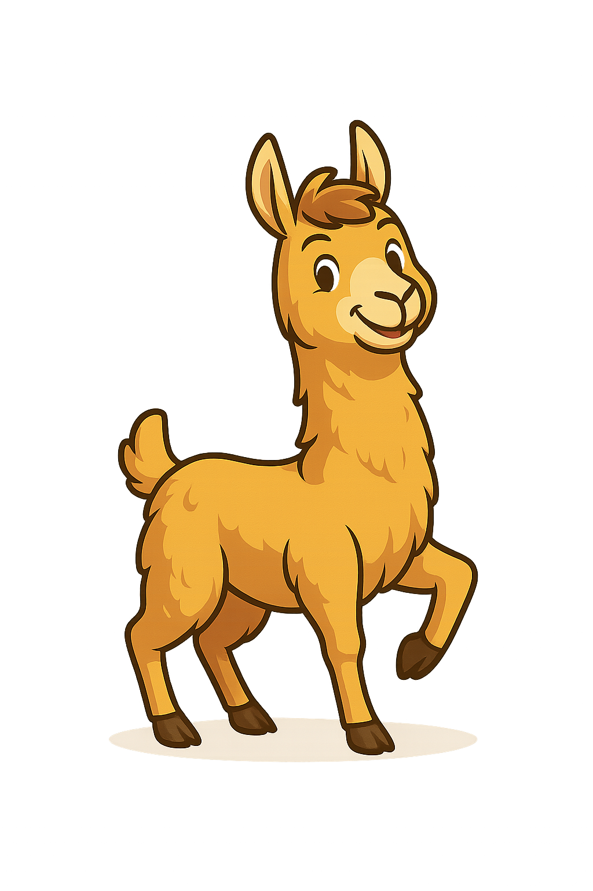

Bienvenid@s al Bot de Lourdes Ortiz!
Participá, consultá, proponé ideas y seguí proyectos en curso.
📌 Realizar una Sugerencia
📚 Ver Proyectos Legislativos
📄 Declaraciones de Interés
💡 Proponer una Idea
🏛️ ¿Conocés cuál es la función de la Legislatura?